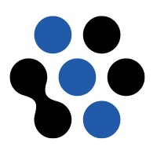

Front End Developer Intern
- The Game Crafter (Remote), 2018
Upgraded the store user interface to a new platform using Vue.js and Bootstrap 4.
Developed a prototype that allowed a single code base to serve multiple specialized store fronts.
Senior Business Analyst
- Simon Property Group, 2010-2017
Replaced our legacy expense reporting system while switching travel card vendors. Improved user experience and engagement
for 5000 employees while saving money.
Launched a procurement system for 30 departments and 300 shopping malls. Improved plan compliance and reduced fraud.
Transitioned our manual lease workflow process to Salesforce.com. Improved speed and visibility over manual process.

Consulting Business Analyst
- Fusion Alliance, 2007-2010
Enticed reluctant stakeholders via user-centered design to transition Simon’s lease workflow system off failing infrastructure.
Integrated LabWare with the clinical trials reporting system I developed at Covance.
Senior Developer / Analyst
- Covance, 2000-2007
Redesigned a 13,000-user clinical trials web portal to distill actionable information from terabytes of data.
Designed and developed UI to streamline entry of 200 ECG diagnostic codes via numeric keypad.
Re-engineered a clinical trials reporting system to generate 1400 FDA-compliant reports per week. Improved efficiency, scalability, usability, and compliance while adding transactional processing, scheduled processing, and automated delivery.
Extended a local kit production line to global distribution. Saved $.5M annually, improved global output 81%, improved quality, and reduced delivery time.
I have 20 years of experience creating interactive systems. I recently completed a master's in human-computer interaction from Indiana University. I am seeking a team of curious and creative people who get excited and make things that empower and delight humans.
I participate in and promote user experience groups in the Indianapolis area, including:
Indiana User Experience Professionals Association
Indianapolis Interaction Design Association
Experience Makers
My hobby is playing and designing cooperative tabletop games, in which multiple players in different roles work together to win or lose as a team. (I think of them as "distributed cognition games.") I organize local playtest meetups and a regional game design convention, to help designers learn from each other.
"The heart of interaction design is not our interaction with technology, it's our interaction with each other through technology. It's not about us and objects. It's about us and each other." - Graham Pullin
Evi (left), Monica (right), and Carl (back) at the Fort Harrison State Park Inn.
Our team consisted of Evi, Monica, and myself: three HCI masters students. We reached out to 20 organizations about partnering with them for our two-semester UX design capstone project. We met with 5 organizations by phone or in person to discuss potential projects. We selected Schneider Geospatial and Arts for Lawrence because their augmented reality mobile project excited us. The timing was perfect: they weren’t planning to start development until the following year. They had the technical expertise to do the development, but were excited to draw on our design expertise to ensure an engaging experience.
Another team in our class hadn't found a project partner, so I introduced them to one of the partners we didn’t select. They completed a capstone project together. Further conversation with another potential partner led to my summer internship.
Welcome to Fort Ben
Research: First Semester, Weeks 6-11
We met to kick off the project with Schneider Geospatial, and their client for the project, Arts for Lawrence. We established a weekly meeting schedule, alternating between online Zoom meetings and in-person meetings at Schneider’s office.
Fort Benjamin Harrison was a US Army base in Lawrence, Indiana, operating from 1906 to 1995. 1700 acres of the fort became Fort Harrison State Park. The remaining acreage is residential, office, and retail spaces in the former military structures. Arts for Lawrence had received a grant to turn part of that space into a cultural campus, celebrating the fort’s history and the work of local artists.
Left: The former extent of Fort Benjamin Harrison.
Right: Magnified view of cultural campus.
Our mobile app project was a single line item from their grant proposal. It stated the project would include “A history-focused augmented-reality app.” We discussed ideas and goals for the app, including how it would interact with other features from the larger project.
Changes to the Theater at the Fort over time, to be depicted in the app. 1) When built in the 1930s. 2) On a postcard in 1943. 3) As the current office for Arts for Lawrence.
One activity I led was a “premortem”. We pretended that we were in the future and the project had failed, and discussed what led to the imagined failure. This revealed many requirements that might have otherwise not been discovered. I followed up with the inverse, a “preparade” activity, in which we imagine the project being wildly successful. The premortem is a sobering exercise, so this brought everyone back to an optimistic mood. It also revealed future opportunities, such as spinning off the app as a product for other clients. Our partners were enthusiastic about the results of these activities.
To learn more about what people do when they come to Fort Ben, I arranged for three tours of the area from local guides.
On a tour with local guides.
Community meeting in the Theater.
Arts for Lawrence held a community meeting about the cultural campus grant. I led a presentation about our project. We requested attendees to fill out a survey about their relationship with Fort Ben and interest in the app. We received 31 survey responses.
Bringing History to Life
Analysis & Ideation: First Semester, Weeks 12-16
Affinity mapping our survey responses.
With data from our research activities, we constructed two personas. For each persona, we constructed an as-is journey map of a tour of the Fort Ben area.
We knew that our augmented reality feature would be to align historical photos in the app with the structures as they stand today. This was inspired by a photo in the Schneider Geospatial lobby. It shows a black-and-white photo of graduating chaplains, held up from the position in which the photo had been taken. We were all excited about this feature, but it would prove more problematic than we had anticipated.
Aligning a historical photo with current perspective: the AR feature desired for the app.
Our team brainstormed other features. We sketched storyboards from the ones that seemed most interesting.
We discussed these storyboards with our partners, and settled on a feature to provide fictional characters as virtual guides. They would lead the users on walking tours, while describing their historical experiences at Fort Ben. This concluded our first semester on the project.
Experiments in Augmented Reality
Prototyping: Second Semester, Weeks 2-11
I led a task analysis exercise to identify the steps required to complete two features:
Take a day-in-the-life tour with a virtual guide
Overlay images from a historical timeline into an augmented reality display
From those steps we remotely collaborated on a low-fidelity prototype in Adobe XD, and demonstrated it to our partners. The resulting discussion revealed some concerns about the augmented reality feature:
Mobile device positioning sensors aren’t precise enough for the app to recognize when the historical image was aligned with the camera image.
As users attempted to align the images, they might intrude on private property, block traffic on sidewalks, or even wander into the street.
We provided a slider to control the opacity of the overlaid historical photo, but we had concerns that users wouldn't understand opacity.
About this time, Monica experienced serious health problems which temporarily removed her from the project. And Evi and I disagreed upon the technology to use for our next prototype.
Evi wanted to simulate the photo alignment feature using Torch AR, a prototyping tool.
I had already experimented with AR using Unity, and thought I could quickly code a working prototype that would be more enlightening than a simulation.
We agreed to each create our own prototype for one week. At our next partner meeting, we demonstrated both prototypes. Both of them worked, but Evi did not want to use Unity. She volunteered to develop our high-fidelity prototype if she could use the prototyping tool of her choice. She later abandoned Torch AR in favor of ProtoPie, and ultimately created our testing prototype with Sketch and Principle.
While Evi developed the high-fidelity prototype, I wrote our user test protocols and recruited participants. The test consisted of the following parts:
Meet at the Fort Ben community campus. Go through a brief orientation and pre-scenario interview. Begin audio recording.
Day-in-the-Life scenario: Follow overhead map directions to a historical location. Experience the location according to a virtual guide’s description. Participant was to think aloud.
Historical Timeline scenario: Return to the starting location to look at information about the Theater at the Fort. Align the Theater’s current appearance with a historical photo. Participant was to think aloud.
End of session questionnaire, followed by a brief post-scenario interview.
We conducted a pilot test with our instructor. That November was already quite cold and windy, so we halved the walking distance to the first test location. I also arranged for permission to begin and end all tests in the lobby of the Theater at the Fort, to protect our participants from the weather. Two participants canceled their test sessions when they came down sick. One test sessions was postponed due to an early blizzard.
Our user testing conditions.
Ultimately, the participants for our six user test sessions were as follows.
Session
Persona
Age*
Gender
AR Experience
Notes
S1
Resident
Older
Male
None
S2
Resident
Younger
Male
Astronomy apps
S3
Resident
Older
Male
Worked on entertainment apps.
S4
Visitor
Younger
Female
Pokemon Go
Performed offsite at the IUPUI campus.
S5
Visitor
Older
Male and Female
Pokemon Go
Married couple performing the test together.
S6
Visitor
Younger
Female
Pokemon Go
*Compared to a reference age of 50.
We wanted testing insight from at least one of our classmates. But they were mostly foreign students without transportation to the test location. So we conducted test session 4 on our school campus, while the participant pretended she was walking at Fort Ben. The conditions were not ideal, but she provided valuable insight and data.
I facilitated each test session. Evi provided her mobile phone as the testing device. I compiled the quantitative data (time on task, numeric questionnaire responses) for our test report. We compiled notes from our interview responses, observations, and recordings. Then our team met online using Miro to group the notes by related themes in an affinity diagram.
Affinity diagram of our user test data, created remotely via Miro.
I had provided voice recordings for the virtual guide, and we included audio effects of marching soldiers. Our test participants liked the immersive experience from these audio features.
The virtual guide introduces himself.
The AR photo alignment feature intrigued our participants. Even though it had some issues, they really wanted it to work.
A Pleasing Finale
Delivery: Second Semester, Weeks 12-14
By now Monica had recovered enough to resume work on the project. She and Evi prepared our class presentation and project poster while I prepared the final report. Evi updated the prototype based on our test findings.
Our project partners told us they were very satisfied with our work:
I was fortunate to be able to work with Carl and his talented team. He is creative, engaging, and well organized. He has a unique ability to empathize with users, and turn this understanding into intentional experiences.
-Daniel Mallinak, Director of Software Developer, Schneider Geospatial
Carl was thorough, creative, and professional. His team tested and delivered a prototype that I am confident will entertain and enlighten our visitors.
-Judy Byron, Executive Director, Arts for Lawrence
I connected Schneider Geospatial with a programming instructor who helped them start development on the app as a project for his students. And our presentation won a People’s Choice award at our school capstone event.
Context: Independent Study in Serious Games, IUPUI
Users: People who want to play with a partner instead of against them
My Role: Product design, local and remote user testing, marketing, digital game development
I wanted to design a cooperative game to play with my spouse. I started with colored markers on index cards and a simple set of rules:
Two players must arrange tiles to match both their win conditions.
Neither player knows the other’s win condition.
The players cannot speak.
Initial playtests were encouraging. A friend volunteered the artwork. I designed the components and box in Adobe Illustrator. After playtests indicated the design was solid, I wrote the rulebook, laid it out in InDesign, and conducted blind playtests to validate it. I set up a shop page on The Game Crafter. Friends helped me create a promo video. By product launch I had tested the prototype with over 80 players, from family and friends to expert game designers and publishers.
For a Serious Games class in Fall 2019, I conducted tests comparing the experience of playing Telepathic face-to-face versus playing with a remote partner over the Internet. What I learned helped me to improve the manual and component design, and to start creating a digital prototype in Unity.
Contents of a Telepathic box.
My spouse doesn’t care for the game, but my crowd sale sold over 100 copies.
My Role: UX research, web and mobile product design, local and remote user testing
Graspable Math canvas, before redesign.
Graspable Math provides an online tactile interface for solving algebra equations (see above). Their product had good traffic, but poor user retention. As a UX intern they asked me to improve the onboarding experience.
I documented cognitive walkthroughs of competing products. I calculated user churn from Google analytics data. I attended training sessions, surveyed target users, and interviewed expert users. I documented critical usability issues, such as:
The product was designed for large screens, despite the reliance upon tablets and mobile devices in classrooms.
Personal classroom materials could not be organized.
Public classroom materials were undiscoverable.
Concept map and story map. Click for larger view.
To discuss how to address the issues, I created a concept map and a story map. I created a wireframe prototype in Adobe XD which overhauled the main interactive canvas (see below, with menu open) and provided materials organization. I conducted four online usability tests to validate the prototype.
My reports offered Graspable Math many suggestions for improving their onboarding experience. They hired a UX designer as my internship ended, to carry on the work that I started.
Context: Interaction Design Practice class, final project, IUPUI
Users: Healthcare patients and providers
My Role: UX research, mobile product design
Lo-fi prototoype: Prescription information screen.
Healthcare portals connect patients and providers via the Internet. They provide an alternative to time-constrained and time-consuming communication by phone. To research them, we gathered information from the following sources:
Two healthcare portals
Five providers (a physician assistant, two dentists, a doctor, and a pharmacist)
One patient who manages 20 prescriptions for herself and her spouse
We discovered that portals are not realizing their potential:
Portal vendors focus on providing features instead of usability.
Portals often use medical jargon instead of information patients can understand.
Liability and regulations constrain portal use.
Portals lack the personal connection that patients feel with voice communication.
Storyboard for refilling a controlled prescription.
Based on our research we designed a prescription management subsystem for a healthcare portal. We selected this area because it is a common and important interaction involving multiple parties (patient, caregiver, physician, and pharmacist) in a workflow. We created storyboards, whiteboarded screens, and created a prototype with Adobe XD. Four HCI experts and a physician assistant evaluated the prototype, and provided much helpful input.
Much work would remain to complete the prescription subsystem. We learned some things about the needs of elderly users and the requirements of healthcare systems. We also gained practice with Adobe XD and creating validation scenarios.
Context: Prototyping for Interactive Systems class, final project, IUPUI
Users: AR game players
My Role: Mobile product design
Initial idea sketch for Nexus.
Our final project team wanted to make a digital game that encouraged players to do the following:
Be physically active in the real world
Work together with their friends
We decided to design a cooperative AR game for smartphones.
Nexus is like a Ghostbusters tower-defense game you play in a park. Your team runs around to gather resources and build towers. The towers zap evil spirits that travel along ley lines toward your base. If too many spirits reach the base, you lose.
After some initial sketching and whiteboarding, I researched some other AR games and wrote a game design document. For our first prototype we drew some storyboards and selected some basic tasks:
Forming a team
Communicating with teammates
Gathering resources
Building defenses
We tested the prototype in Balsamiq with three participants. From those results we made a higher fidelity Sketch prototype and an experience video. Our class enjoyed our presentation, and several people encouraged us to keep developing the game.